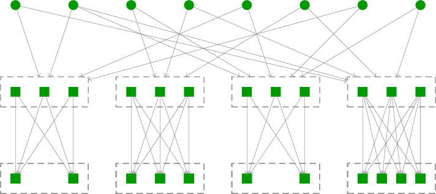

Coding-based Network Communication
Network communications are facing increasing challenges due to emerging applications with low-latency and high-throughput communication demands.
Limitations of Tranditional Network Communications
Traditional network communication technologies, represented by TCP/IP, are primarily characterized by the following main features:
- For each communication, packets are transmitted on a fixed path.
- Retransmission is used for end-to-end reliability.
- End-to-end congestion control.
These features impose requirement on the network links reliability and latency.
However, such network communication methods are far from optimal in nearly all practical scenarios.
- The use of one or a set of predetermined paths prevents achieving the maximum communication rate.
- The end-to-end control mechanisms respond relatively slowly to dynamic changes in the network.
- Even at the expense of communication rate, wireless communication struggles to simultaneously ensure high reliability and stable latency.
Coding-based Network Communications
To fundamentally address the issues in network communication, it is necessary to appropriately adopt coding techniques, primarily including erasure codes and network coding.
- Erasure codes can reduce the number of retransmissions in end-to-end network communication, thereby lowering the communication delay caused by waiting for feedback. Additionally, erasure codes have the ability to adapt to different path delays and bandwidth variations, enhancing the performance of multipath communication. Common erasure codes include Reed-Solomon codes and fountain codes.
- Network coding allows intermediate nodes in the network to generate and transmit new data packets, breaking the limitations of the traditional store-and-forward model. In multicast communication and network environments with packet loss, linear network coding can achieve the highest communication efficiency under given resource conditions. Linear network coding can employ random linear combination coefficients, making distributed implementation possible.
Coding-based network communication can also broaden the opportunities for enhancing network resource allocations and communication media.
- Congestion control must be tailored to the unique characteristics of coding to fully leverage its benefits.
- High reliability is not always a necessity for wireless communications.
Overall, coding-based network communication can offer advantages in terms of throughput, latency, and reliability that far surpass those attainable by traditional technologies. However, much research and development are still required for practical applications.
Our Research
Our research towards practically ready coding-based network communication solutions mainly focuses on the following directions:
- efficient coding design,
- network protocol design, and
- communication meidium design.
Efficient Coding for Network Communications
Random linear network coding (RLNC) is a distributed approach for linear network coding where the linear combination coefficients are chosen randomly. This approach ensures a high success probability when the space for coefficients is large. RLNC can achieve the maximum multicast flow even with lossy links, obviating the need for link-level retransmissions or erasure coding. However, when the batch of packets for network coding is large, RLNC incurs high overhead due to the coefficient vectors and high computational costs for encoding and decoding. This has prompted research into reducing these issues, such as coefficient vector compression and sparse encoding.
Batched Network Coding (BNC) combines principles from both end-to-end erasure coding and network coding to provide a comprehensive coding framework for network communications. BNC consists of an outer code and an inner code (refer to Figure 1). The outer code, which is an extension of erasure coding, generates coded packets in batches. The inner code facilitates network coding for packets within the same batch, also called recoding. Unlike linear network coding and RLNC, BNC does not necessitate that each batch is decodable independently, thereby alleviating the need for a large coefficient space. By using a small batch size, BNC can efficiently reduce both the coefficient vector overhead and the computation cost. In the current research on BNC,
- Both fountain codes and LDPC codes can be extended as the outer code. In particular, when the outer code is a matrix-extended fountain code, the batched network code is also called a (BATched-Sparse) BATS code [1].
- Various recoding schemes have been discussed. For further information, see [2].

Figure 1: Dual layer coding structure of BNC